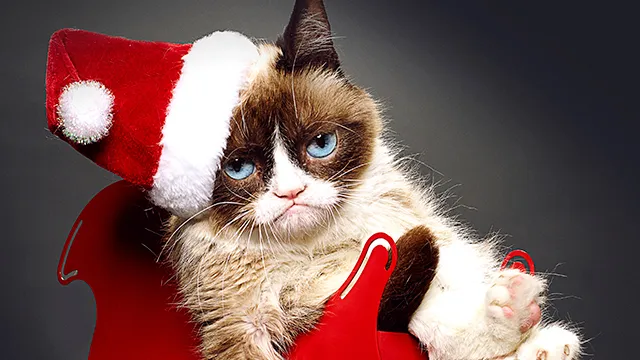

Grumpy Cat(рус. Сердитая кошка), настоящая кличка — Соус Тардар (англ. Tardar Sauce) — кошка, ставшая интернет-знаменитостью благодаря необычной внешноGrumpy Catсти после того, как брат её хозяйки в сентябре 2012 года разместил фотографию кошки на сайте Reddit. По словам хозяйки, Табаты Бундесен, подобная внешность связана с врождённой карликовостью и неправильным прикусом[1].>
Кличка кошки происходит от названия соуса тартар. Это связано с тем, что когда она была ещё котёнком, её шерсть была покрыта тёмными пятнышками. Кристал, дочь Табаты, решила, что это похоже на соус тартар. Название «Соус Тардар» было написано с ошибкой (ошибка в слове «тартар»), но в итоге его решили не менять[2].
